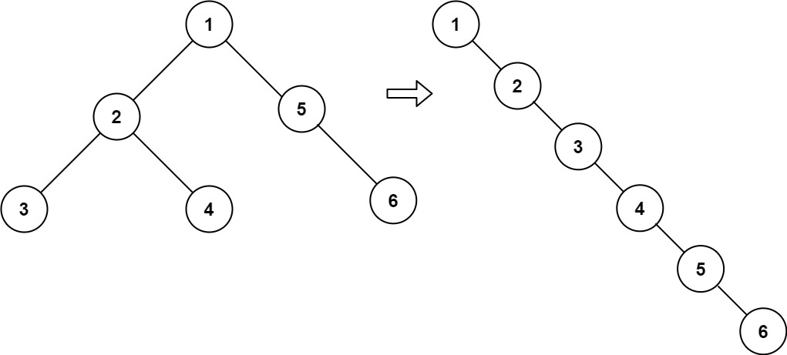

题面
给你二叉树的根结点 root ，请你将它展开为一个单链表：
- 展开后的单链表应该同样使用
TreeNode，其中right子指针指向链表中下一个结点，而左子指针始终为null。 - 展开后的单链表应该与二叉树 先序遍历 顺序相同。
示例 1：

输入： root = [1,2,5,3,4,null,6]
输出：[1,null,2,null,3,null,4,null,5,null,6]示例 2：
输入： root = []
输出：[]示例 3：
输入： root = [0]
输出：[0]提示：
- 树中结点数在范围
[0, 2000]内 -100 <= Node.val <= 100
进阶： 你可以使用原地算法（O(1) 额外空间）展开这棵树吗？
思路
- 展开后的链表顺序就是先序遍历的顺序。所以分两步：
- 先序遍历收集所有节点到列表
- 遍历列表，逐个修改指针：
left = None，right = 下一个节点
- "原地修改"的意思是修改已有的节点（不创建新节点），列表里存的是节点对象的引用，改了它们的
left/right就是改了原来的树 - 先序遍历回顾：根 → 左 → 右
- 递归版：
append(node)→dfs(left)→dfs(right) - 颜色法入栈顺序（反着推）：右(WHITE), 左(WHITE), 根(GRAY)
- 三种遍历的颜色法入栈顺序对比：
遍历方式 | 期望顺序 | 入栈顺序（反） |
|---|---|---|
中序（左→根→右） | 右(WHITE), 根(GRAY), 左(WHITE) | |
先序（根→左→右） | 右(WHITE), 左(WHITE), 根(GRAY) | |
后序（左→右→根） | 根(GRAY), 右(WHITE), 左(WHITE) |
解法一 递归先序遍历
class Solution:
def flatten(self, root: Optional[TreeNode]) -> None:
self.nodes = []
def dfs(node: Optional[TreeNode]):
if not node:
return
self.nodes.append(node)
dfs(node.left)
dfs(node.right)
dfs(root)
dum = root
for node in self.nodes:
if root == node:
continue
root.left = None
root.right = node
root = root.right
return dum解法二 颜色法 迭代先序遍历
class Solution:
def flatten(self, root: Optional[TreeNode]) -> None:
if not root: return
WHITE, GRAY = 0, 1
nodes = []
stack = [(WHITE, root)]
while stack:
color, node = stack.pop()
if node is None: continue
if color == WHITE:
stack.append((WHITE, node.right))
stack.append((WHITE, node.left))
stack.append((GRAY, node))
else:
nodes.append(node)
dum = root
for node in nodes:
if root == node:
continue
root.left = None
root.right = node
root = root.right
return dum- 复杂度：时间 O(n)，空间 O(n)（存储所有节点的列表）
解法三 头插法 逆先序遍历 O 1 空间
思路
- 解法一和二都需要一个列表存所有节点，空间 O(n)。能不能边遍历边改指针，不用额外存储？
- 关键洞察：如果我们按先序的逆序（右→左→根）处理节点，每处理一个节点时，它后面的链表已经接好了，只需把当前节点的
right指向已经接好的那段链表头部（self.prev） - 为什么叫"头插法"：每次处理一个节点，都是把它插到已建好的链表头部。类似链表的头插法建表——最后处理的节点变成链表头
- 逆先序遍历顺序：先序是 根→左→右，逆过来就是 右→左→根
- 以
[1,2,5,3,4,null,6]为例，逆先序访问顺序是：6 → 5 → 4 → 3 → 2 → 1 - 最终链表顺序是：1 → 2 → 3 → 4 → 5 → 6（正好反过来）
- 所以从尾部往前建，每次把当前节点接到链表头部
- 为什么 6 是第一个被处理的？ 因为遍历顺序是 右→左→根：
- 从根 1 出发，先递归右子树 5
- 到了 5，先递归它的右子树 6
- 6 没有子节点，递归返回，6 是第一个执行
node.right = self.prev的节点
- 逆先序 vs 后序的区别：
逆先序 | 后序 | |
|---|---|---|
顺序 | 右→左→根 | 左→右→根 |
对本题 | ✅ 正确（先序的完美逆序） | ❌ 错误（不是先序的逆序） |
后序是 左→右→根，逆先序是 右→左→根，它们只是"根"的位置一样（最后），但左右的顺序是反的！- 执行过程（以
[1,2,5,3,4,null,6]为例）：
步骤 | 当前节点 | 操作 | self.prev |
|---|---|---|---|
1 | 6 | right=None, prev=6 | 6 |
2 | 5 | right=6, prev=5 | 5→6 |
3 | 4 | right=5, prev=4 | 4→5→6 |
4 | 3 | right=4, prev=3 | 3→4→5→6 |
5 | 2 | right=3, prev=2 | 2→3→4→5→6 |
6 | 1 | right=2, prev=1 | 1→2→3→4→5→6 ✅ |
- 核心心法：站在一个节点的视角，相信递归搞定其余的
- 当代码执行到
node.right = self.prev时，我不需要关心self.prev指向的那条链表是怎么建出来的 - 我只需要相信：递归已经把我右边和左边的节点都处理完了，
self.prev就是我在最终链表中的下一个节点 - 我只管把自己接上去，然后更新
self.prev = node（我变成新的链表头）
代码实现
class Solution:
def flatten(self, root: Optional[TreeNode]) -> None:
self.prev = None
def dfs(node: Optional[TreeNode]):
if not node:
return
dfs(node.right)
dfs(node.left)
node.left = None
node.right = self.prev
self.prev = node
dfs(root)
return root- 易错点：
- 遍历顺序是 右→左→根，不是左→右→根（后序）：写反了链表顺序就全错
- `node.left = None` 别忘：题目要求左指针全部置空
- `self.prev` 初始为 `None`：最后一个节点（6）的
right应该指向None，正好对应初始值
- 复杂度：时间 O(n)，空间 O(h)（h 为树高，平衡树 O(log n)，最坏 O(n)）
- 比解法一/二好在哪：省掉了那个 O(n) 的列表，只剩递归调用栈的开销
- 递归调用栈是什么：每次调用
dfs(node)系统会在内存栈上压入一帧（保存局部变量、返回地址），递归多深就压多深帧。树高 h 层，栈就占 O(h) 空间 - 不是 O(1)：真正 O(1) 见解法四（Morris 遍历思路），彻底消除递归栈。但面试中头插法已经够用
解法四 迭代寻找前驱节点 真正 O 1 空间
思路
- 核心洞察：先序遍历中，右子树的所有节点都在左子树后面，而且紧跟在左子树的最右节点后面
- 所以对每个节点：把右子树"寄存"到左子树最右节点后面，然后把左子树搬到右边。循环执行直到走完
- 具体步骤（如果当前节点有左子树）：
- 找到左子树的最右节点
pre（while pre.right一直往右走到底） pre.right = cur.right（把右子树寄存到左子树最右节点后面）cur.right = cur.left（左子树搬到右边）cur.left = None（左指针置空）cur = cur.right（往下走一步）
- 如果没有左子树：直接
cur = cur.right跳过
完整图解
以 [1,2,5,3,4,null,6] 为例，逐步展示：
初始：
1
/ \
2 5
/ \ \
3 4 6第一轮：cur=1，有左子树。找左子树(2)的最右节点 → 4
4.right = 5（右子树 5→6 寄存到 4 后面）
1.right = 2（左子树搬到右边）
1.left = None
1
\
2
/ \
3 4
\
5
\
6第二轮：cur=2，有左子树。找左子树(3)的最右节点 → 3
3.right = 4（右子树 4→5→6 寄存到 3 后面）
2.right = 3（左子树搬到右边）
2.left = None
1
\
2
\
3
\
4
\
5
\
6 ✅ 完成！后续轮：cur=3, 4, 5, 6 都没有左子树，直接 cur = cur.right 跳过
Q&A
- 为什么不会丢失右子树？ 因为在覆盖
cur.right之前，已经用pre.right = cur.right把原来的右子树"寄存"到了左子树的最右节点后面 - `while pre.right` 为什么不是 `while pre`？
pre从cur.left开始，它本身就是一个存在的节点。我们要找的是它往右走到底的那个节点，不是走到None。如果写while pre，pre 会走到None，你就拿不到最右节点了 - 如果只有右子树没有左子树呢？
if cur.left判断覆盖了：没有左子树就跳过，直接cur = cur.right往右走 - 为什么是 O(1) 空间：不用递归（无调用栈），不用列表，只用
cur和pre两个指针 - 为什么时间还是 O(n)：虽然有内层 while 找最右节点，但每条边最多被访问两次（一次找前驱，一次被 cur 走过），总操作数还是线性的
代码实现
class Solution:
def flatten(self, root: Optional[TreeNode]) -> None:
cur = root
while cur:
if cur.left:
pre = cur.left
# 左子树的最右节点就是右子树的先驱节点
while pre.right:
pre = pre.right
pre.right = cur.right
cur.right = cur.left
cur.left = None
cur = cur.right
return root- 易错点：
- `pre` 的起点是 `cur.left`：不是
cur，不是cur.right。从左子节点开始往右走 - `while pre.right` 不是 `while pre`：要停在最右节点上，不是走到 None
- 操作顺序不能乱：先
pre.right = cur.right（寄存），再cur.right = cur.left（搬移），再cur.left = None（清空）。如果先搬移再寄存，原来的cur.right就丢了 - `if cur.left` 判断不能省：没有左子树时不需要操作，直接往右走
- 复杂度：时间 O(n)，空间 O(1)（只用两个指针，无递归、无栈、无列表）